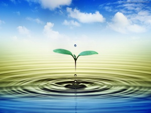

Без воды немыслимо существование всех живых организмов; она с древности считалась первоисточником жизни наравне с огнем, воздухом и землей. Почитание воды известно с самых древних времен. Персидский царь Ксеркс, перед строительством нового моста для переброски своих войск в Грецию, заключил договор о примирении с морем, бросив в него символ связи — цепь из колец. Издревле многие народы величали воду матерью, также как и землю, упоминали ее имя при заклятиях. Славяне клялись родниками и ручьями. Реки и криницы в народных легендах олицетворялись в виде девушек. В воду нельзя было плевать (не плюй в колодец, случится напиться; в воду грех плевать; плевать в воду — все равно, что матери в глаза). Наши предки учили своих потомков правильному отношению к воде: в воду нельзя плевать, мочиться, говорить о ней бранные слова. У гуцулов-чабанов прокисшую сыворотку и другие продукты молочного производства ни при каких обстоятельствах не разрешалось выливать в ручьи и реки. По поверьям наших предков несоблюдение этих правил приводило к болезням. Водой, как символом здоровья окроплялись коровы после отела, освященной водой окроплялись пчелиные ульи. «Доброго пути и свежей воды», — желали древние греки прощаясь со своими близкими и друзьями. Раньше взрослые люди пили воду с непокрытой головой и перед тем, как начать пить, крестились.
Все, что создано природой, содержит в себе воду. В среднем в организме животных и растений содержится более 50% воды. В теле медузы ее до 96%, в водорослях 95 — 99%, в спорах и семенах от 7 до 15%. В почве находится не менее 20% воды, в организме же человека вода составляет около 65 % (в тел е новорожденного до 80%, у взрослого 60%). В своей жизнедеятельности человек потребляет огромное количество воды. Она используется для производства продуктов питания и предметов пользования человека. Например, для производства одной лишь тонны стали, синтетического волокна или бумаги необходимы сотни кубических метров воды. Даже добыча угля и нефти не обходится без воды, в среднем ее расходуется: на 1тонну угля около 5тонн, на 1тонну нефти — до 130 тонн. Таким образом, топливная промышленность потребляет за год столько воды, сколько приносит ее большая река. сравнимая с Днепром. Подсчитано, что наше народное хозяйство, включая удовлетворение нужд населения, расходует воды примерно 500 — 600 кубических километров в год. Для производства 1 кг растительной пищи — зерна, овощей, требуется в среднем 2 тонны воды. Для производства 1 кг мяса ее необходимо 20 тонн. Человек за год только в процессе питания потребляет в среднем 60 тонн воды. А если к этому прибавить еще 300 тонн воды для удовлетворения других его жизненных потребностей, получается 360 тонн одному человеку.
Вода с растворенными в ней органическими и неорганическими веществами необходима для жизнедеятельности клеток. Она очищает организм от токсинов, необходима для процессов пищеварения, всасывания, циркуляции и выделения. Она способствует переносу питательных веществ по организму, помогает восстанавливать клетки и ткани. Как уже говорилось, вода составляет 80% веса ребенка и около 65-70% веса взрослого. Часть ее находится внутри клеток и называется внутриклеточной жидкостью. Около 30% воды организма содержится в межклеточном веществе. Это межклеточная, или межтканевая жидкость. Плазма крови составляет 5% веса тела (около 3 л) и обеспечивает доставку к тканям питательных веществ и кислорода, которые поступают к отдельным клеткам через межклеточную жидкость. На долю межклеточной, или интерстициальной жидкости приходится около 12 л. Она является внешней средой для клеток, которые извлекают из нее соли, питательные вещества, кислород и в которую они выделяют продукты обмена. Внутриклеточная жидкость составляет окрло 50% веса тела. Она находится внутри клеток, содержит электролиты (калий, фосфаты), питательные вещества (глюкозу, аминокислоты) и благодаря постоянной ферментативной активности обеспечивает процессы обмена веществ. Обмен тканевой жидкости происходит следующим образом: с одной стороны гидростатическое, или механическое, давление плазмы выше по сравнению с межклеточной жидкостью, и поэтому она стремится выйти за пределы кровеносных капилляров. С другой стороны, находящиеся в плазме белки, которые не могут проникнуть в межклеточную жидкость, создают высокое осмотическое давление, благодаря которому жидкость из тканей стремится обратно в ток крови. На артериальном конце капилляров гидростатическое давление выше осмотического, в связи с чем жидкость переходит в ткани. На венозном конце гидростатическое давление уменьшается, а осмотическое возрастает, поэтому жидкость поступает обратно в капилляры. В норме объем жидкости, покидающей капилляры, больше, чем поступающей в.них обратно. Излишек межклеточной жидкости выделяется из тканей через лимфатическую систему. Обмен между межклеточной и внутриклеточной жидкостями зависит не только от осмотического давления, но и от избирательной проницаемости клеточной мембраны, которая свободно проходима для таких веществ, как кислород, двуокись углерода и мочевина. Другие вещества имеют различную концентрацию внутри клетки и за ее пределами, что связано с их активным переносом через клеточную мембрану. Например, калий накапливается, преимущественно, во внутриклеточной жидкости, а натрий — с противоположной стороны клеточной мембраны.
Вода — обязательный участник обмена веществ в организме, она преобразует в раствор всё питательные вещества, попадающие в организм. Естественно, что химически чистой воды в организме нет и быть не может. В ней растворены многие вещества: белки, сахар, витамины, минеральные соли. В каждом органе нашего тела, в каждой его клетке непрерывно идут различные биохимические процессы, происходят сложнейшие превращения одних веществ в другие. Из поступающей в организм пищи вырабатываются вещества, необходимые для нормальной работы всех органов, для жизнедеятельности организма. При помощи воды выводятся из организма ненужные ему и вредные продукты обмена веществ — своеобразные отходы биохимического производства. Без питательных веществ человек может жить несколько недель, без воды же он может прожить не более 2—3 дней. Для обеспечения нормального существования человек должен вводить в организм воды примерно в 2 раза больше по весу, чем питательных веществ.
Человек за день теряет примерно 2600 мл воды: 1500 мл — с мочой, 600 мл — через кожу, 400 мл — через легкие, 100 мл — с калом. Таким образом, за день необходимо выпить примерно 2,6 л воды, из них для образования мочи — 1,5 л. Образование меньшего количества мочи может привести к повреждению мочевых путей и к образованию камней в почках. И если физиологическим сигналом голода служит снижение количества глюкозы в крови, то чувство жажды возникает из-за увеличения в крови концентрации соли и глюкозы, которое быстро нормализуется при питье воды.
Вода играет ведущую роль в теплорегуляции организма, поддерживает тепловой гомеостаз, что позволяет приспосабливаться к перепадам температуры окружающей среды. При повышении температуры" увеличивается испарение воды с поверхности тела, и оно охлаждается. Понижение температуры воздуха и окружающей среды резко сокращает испарение воды, и тепло в организме сохраняется. Потеря большого количества воды (путем испарения, в результате рвоты, поноса, усиленного диуреза) нарушает постоянство внутренней среды (вместе с водой теряются и соли). Нормальная жизнедеятельность организма немыслима без сохранения водно-солевого баланса. Важно учитывать количество не только введенной в организм воды, но и выделенной. Если количество выделенной воды меньше введенной, то это может свидетельствовать, например, об ухудшении деятельности почек, недостаточности сердечно-сосудистой системы.
Количество воды, необходимое для поддержания нормального водного баланса в организме:
Средняя температура воздуха, °С
Минимальная потребность в воде, л
32
3
26
.1,9
21
1.5
15
1,4
10
1,3
4
1,2
Если количество воды, которое теряет человек, достигает 10% массы тела в сутки, наступает значительное снижение работоспособности, а если оно возрастает до 25%, то это обычно приводит к смерти. При правильном соблюдении питьевого режима можно надолго сохранить работоспособность, и организм не будет ни обезвожен, ни перегружен жидкостью. Однако даже при большой потере воды все нарушенные процессы в организме быстро восстанавливаются, если организм пополнится водой до нормы. Зная признаки, указывающие на недостаток воды в организме человека, можно приблизительно определить процент обезвоживания относительно массы тела.
Признаки, указывающие на недостаток воды в организме человека:
1-5% —жажда, плохое самочувствие, замедление движений, сонливость, покраснение в некоторых местах кожи, повышение температуры тела, тошнота, расстройство желудка.
6-10% — одышка, головная боль, покалывание в ногах и руках, отсутствие слюноотделения, потеря способности двигаться и нарушение логики речи.
11-20% — бред, спазмы мышц, распухание языка, притупление слуха и зрения, охлаждение тела.
При температуре окружающей среды воздуха 30 °С даже 20-25% обезвоживания легче перенести, чем обезвоживание в 10-15%, но при более высокой температуре воздуха. Однако беспорядочное излишнее питье ухудшает пищеварение, создает дополнительную нагрузку на сердечно-сосудистую систему и почки, приводит к увеличению выделения через почки и потовые железы ряда ценных для организма веществ (например, поваренной соли). Даже временная перегрузка водой нарушает условия работы мышц, приводит к быстрому утомлению, а иногда вызывает судороги. Но и недостаточное потребление воды также нарушает нормальную жизнедеятельность организма: падает вес тела, увеличивается вязкость крови, повышается температура тела, учащаются пульс и дыхание, возникают жажда и ощущение тошноты, снижается работоспособность. Чувство жажды определяется тем, что в организме уменьшается количество жидкости, в крови повышается концентрация солей, и центр жажды сигнализирует о необходимости потребления воды. Минимальное количестве-воды, необходимое для поддержания водно-солевого баланса в течение суток (питьевая норма), зависит от климатических условий, а также характера и тяжести выполняемой работы. Для климатических условий средней полосы России при минимальной физической нагрузке необходимо потреблять 3,5 л жидкости вместе с питьем и пищей; при физической работе средней тяжести — до 5 л; при тяжелой работе на открытом воздухе — до 6,5 л. Необходимо учесть, что яблоки и фрукты по своему весу приравниваются к воде. Полкилограмма съеденных Яблок равно 1/2 л жидкости. Правильный питьевой режим особенно важно соблюдать в условиях, при которых теряется большое количество жидкости. Это часто случается в жарком климате, при работе в горячих цехах, при длительной и значительной физической нагрузке (например, при тренировке и соревнованиях, горных восхождениях, на марще и т. п.). Жители районов с жарким климатом могут полностью утолять жажду только после еды и строго ограничивать прием жидкости в промежутках между едой. Лучше всего использовать чай, который увеличивает слюноотделение и устраняет сухость во рту, а также добавлять к воде фруктовые и овощные соки или их экстракты. В горячих цехах полезнее пить газированную воду или отвары сухофруктов. Спортсменам рекомендуется утолять жажду только после окончания тренировок. В процессе выполнения упражнений следует полоскать водой рот и глотку. Утолять жажду при горных восхождениях полезнее только во время больших привалов. Чтобы не было беспорядочного питья и введения излишней жидкости во время походов или на марше, надо вьщить 1-2 стакана жидкости перед выступлением, воздержаться от питья на 1-м и 2-м малых привалах, затем выпивать не более 1-2 стаканов воды на 3-м и 4-м. Напиться вволю можно на большом привале.
Естественно, изменение физико-химического состояния воды, ее электропроводности приводит к изменению обмена веществ, усиливая либо тормозя ход биохимических реакций.
Вода для приготовления лекарственных препаратов. Действие лекарств на организм человека, во многом зависит от состояния воды, которую принимает пациент. Загрязнение воды в организме радионуклидами, многочисленными мутагенами и канцерогенами затрудняет действие лекарств. Если человек продолжительное время употреблял загрязненную в (в той или иной степени) воду, то для его лечения потребуется в 2- раза большие дозы лекарств, чем в случае чистой воды, содержащейся в организме. В дистиллированной воде с разрушенной структурой и повышенным содержанием газов, лека^ рства действуют не в полную силу, так как она не содержит нужных микроэлементов (кальция, магния, калия, йода, фтора, цинка и других), которые необходимы для активизации ферментов, участвующих в обмене вводимых лекарственных соединений. Вода для приготовления лекарственных препаратов должна соответствовать целям использования лекарства, особенностям организма пациента, его заболевания. По большому счету применять во всех случаях одну и ту же воду для приготовления лекарственных препаратов не желательно.